Projeto demonstrativo · Etapa 2
Água, cor Galeria local de evidências. O protótipo interativo e a apresentação completa ficam disponíveis após iniciar npm run dev.
Relatório crítico 46 verificações Revisão da galeria Inventário Desempenho Protótipo local Apresentação local Comparação cromática Original → composição A → Etapa 2. Mesma largura em cada coluna, captura PNG sem reamostragem. O navegador pode reduzi-la para caber nesta página.
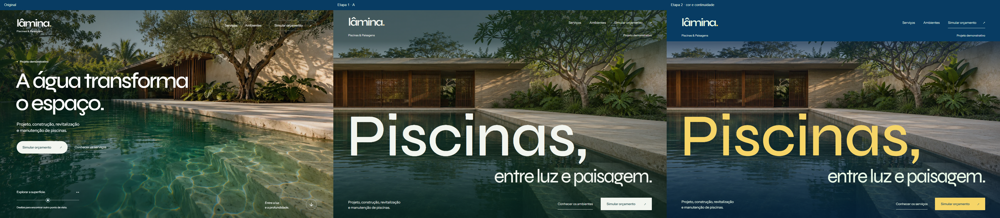
desktop: original, A e nova direção · abrir PNG na resolução original 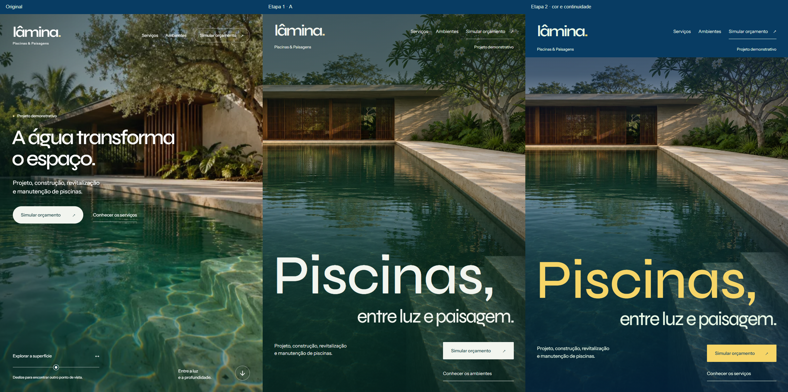
tablet: original, A e nova direção · abrir PNG na resolução original 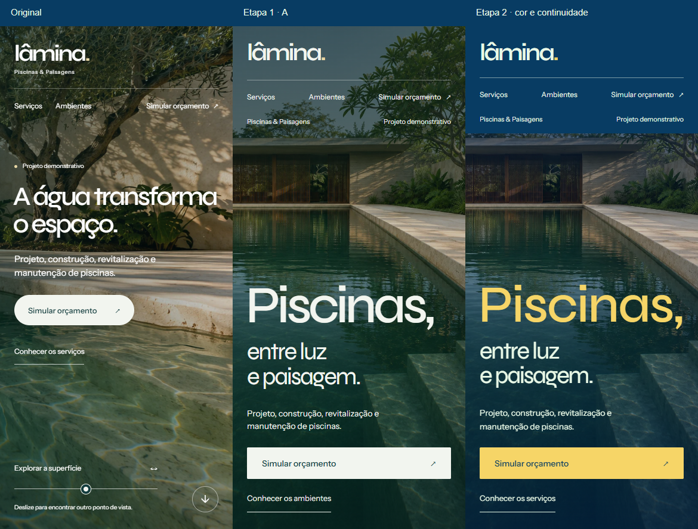
mobile: original, A e nova direção · abrir PNG na resolução original Continuidade até os serviços Desktop · hero · abrir PNG na resolução original 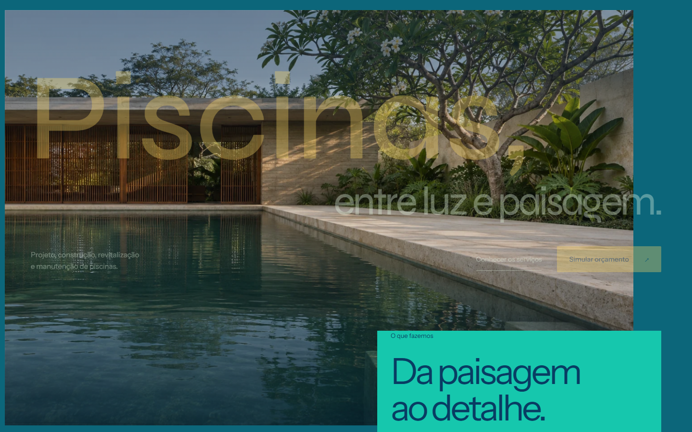
Desktop · inicio · abrir PNG na resolução original 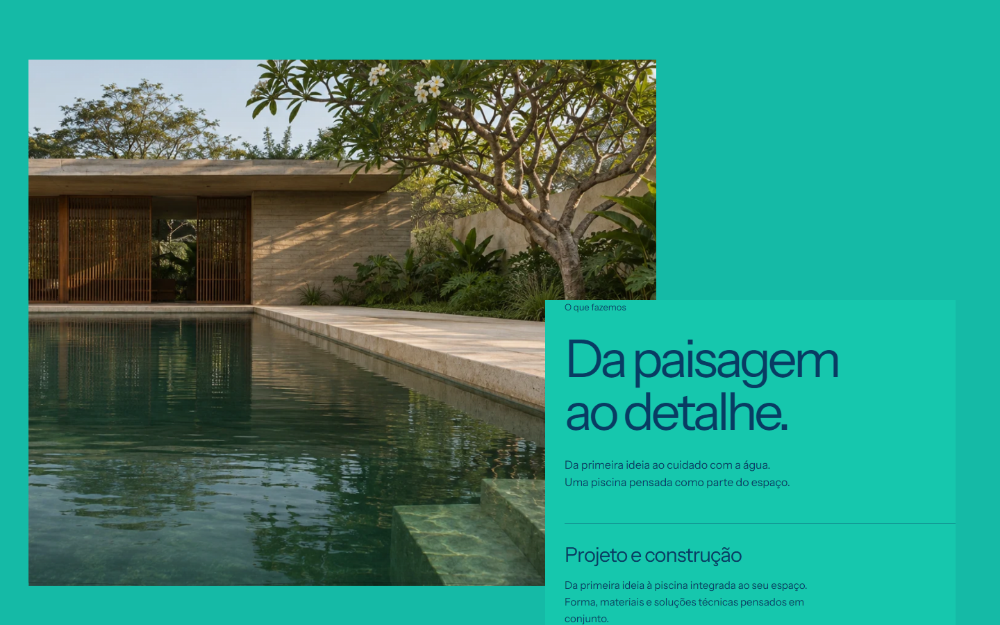
Desktop · passagem · abrir PNG na resolução original 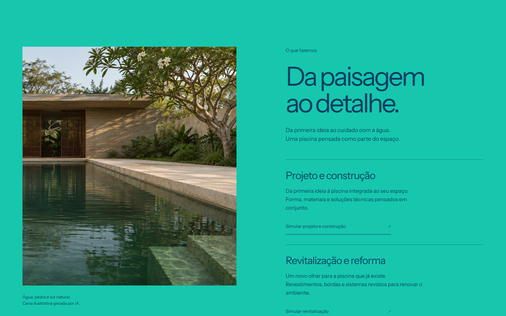
Desktop · servicos · abrir PNG na resolução original Tablet e mobile 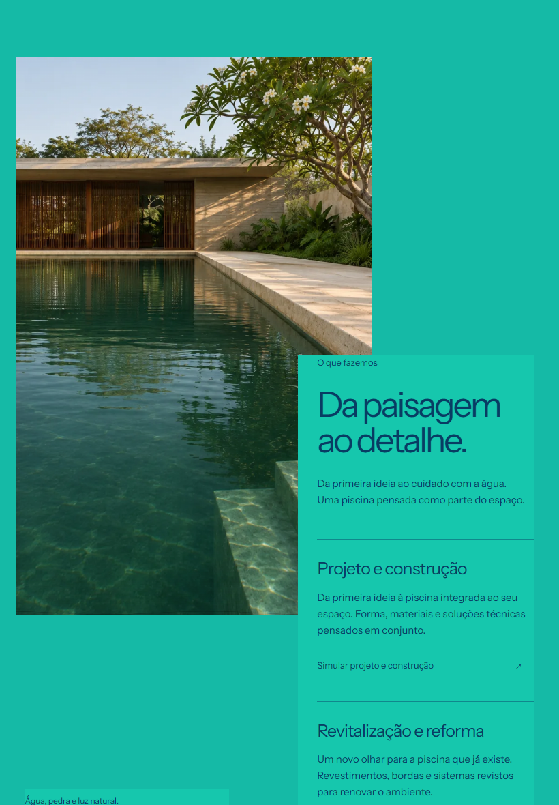
Tablet vertical · passagem · abrir PNG na resolução original 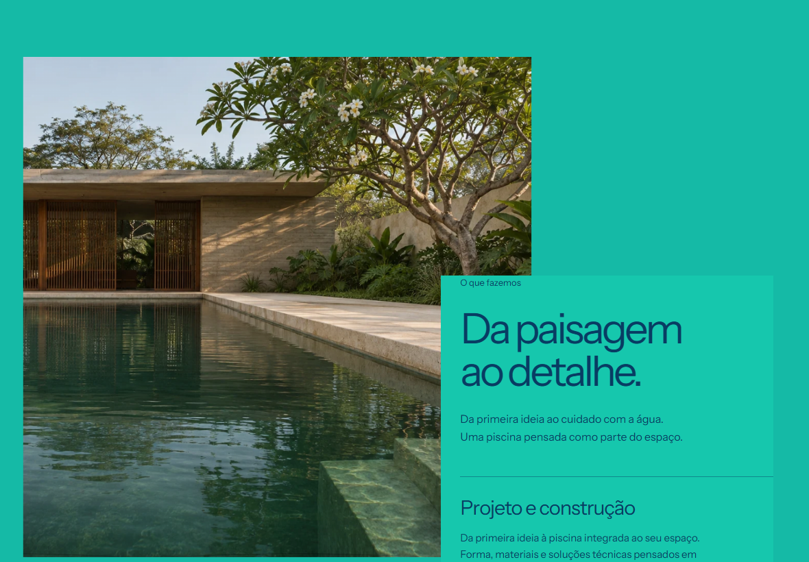
Tablet horizontal · passagem · abrir PNG na resolução original 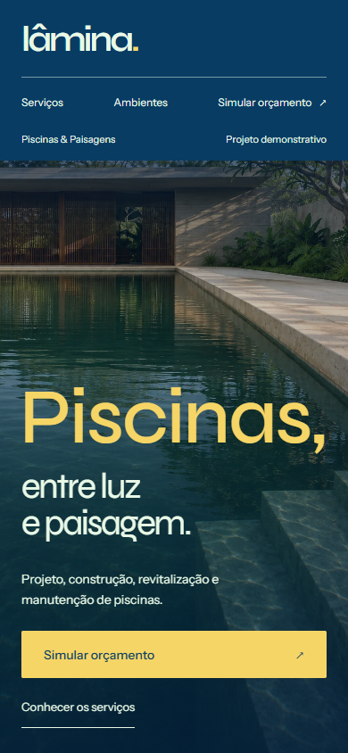
Mobile 390px · hero · abrir PNG na resolução original 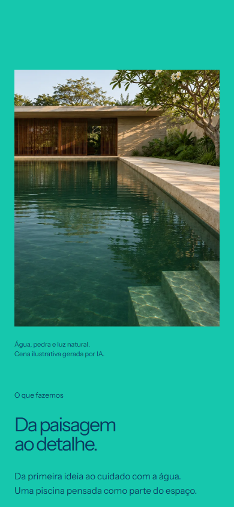
Mobile 390px · destino · abrir PNG na resolução original 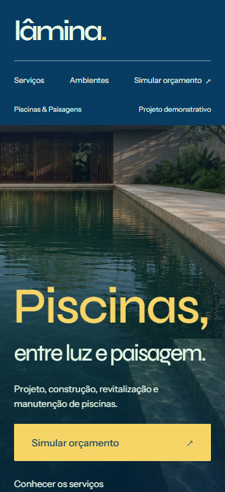
Mobile 320px · hero · abrir PNG na resolução original 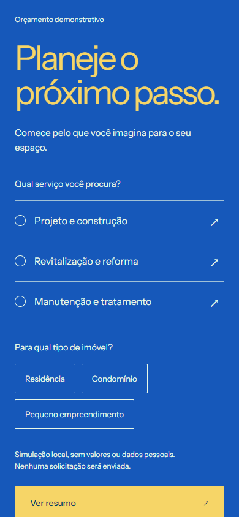
Mobile · simulação de orçamento · abrir PNG na resolução original Serviços: A e nova direção 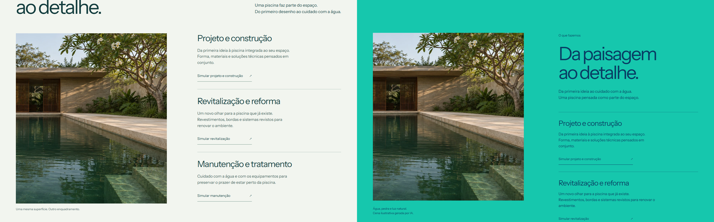
Editorial A → campo turquesa da Etapa 2 · abrir PNG na resolução original Gravações reais, sem montagem Vídeos brutos do navegador: wheel no desktop; gestos de toque emulados no mobile. Há carregamento inicial e reversões rápidas. As sequências de quadros abaixo são amostras a cada segundo, sem interpolação.
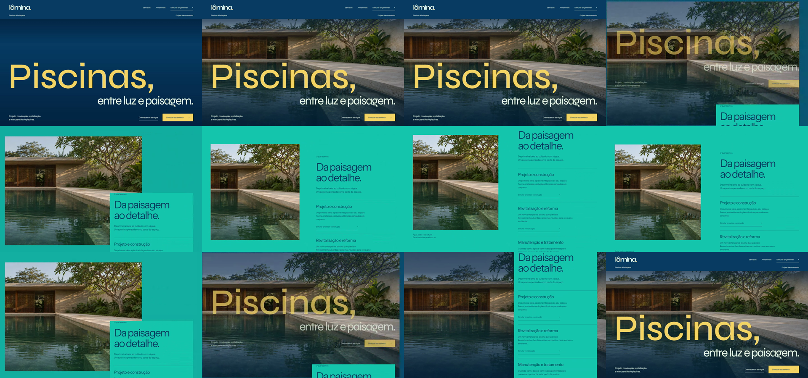
Quadros extraídos da gravação desktop · abrir PNG na resolução original 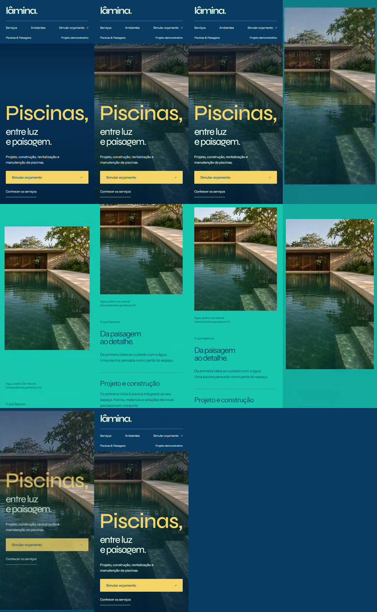
Quadros extraídos da gravação mobile · abrir PNG na resolução original Alternativas gráficas Sem WebGL · passagem · abrir PNG na resolução original Sem WebGL · destino mobile · abrir PNG na resolução original 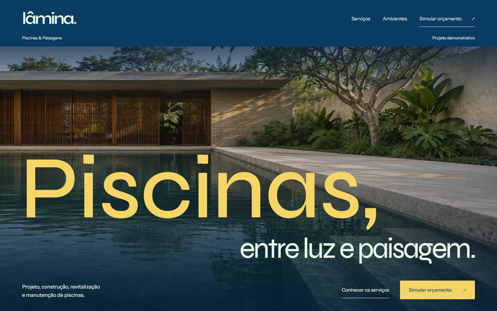
Movimento reduzido · desktop · abrir PNG na resolução original 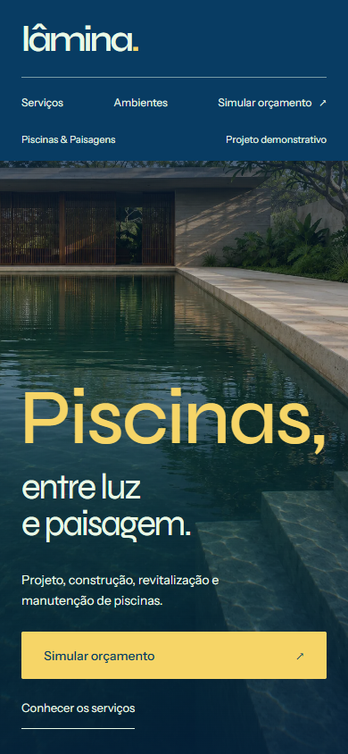
Movimento reduzido · mobile · abrir PNG na resolução original Região aquática de diagnóstico O alaranjado marca a região conservadora do efeito. Arquitetura, plantas e pedra seca permanecem fora da refração.
Sem commits, push ou deploy. Original e estudos A/B preservados. A Etapa 3 não foi iniciada.